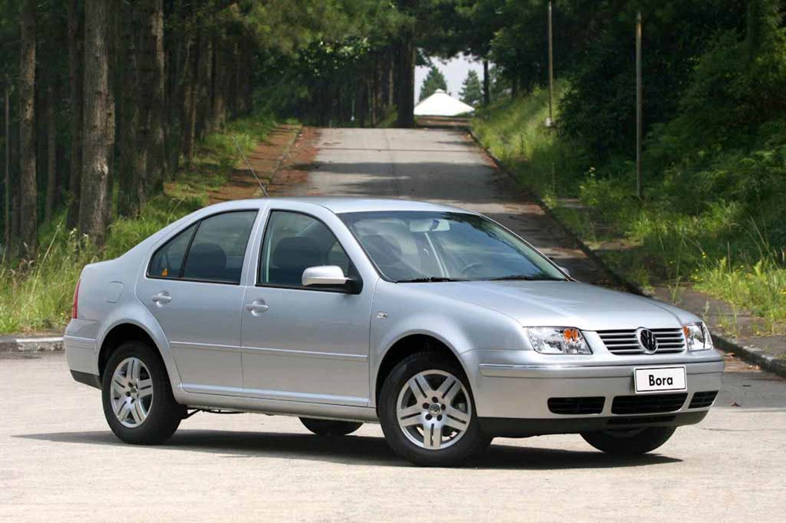

Volkswagen Bora
Com visual elegante e uma pegada mais esportiva, o Volkswagen Bora se destacou entre os sedãs dos anos 2000. Seu motor 2.0, conforto e estilo fizeram dele um modelo bastante desejado na época.
Ficha Técnica
Ano
2000 - 2011
Motor
2.0 | 8v / 1.8 Turbo | 20v
Potência
116 - 180 cv
Câmbio
Manual / Automático
Tração
Dianteira
Carroceria
Sedã
Combustível
Gasolina
FIPE
R$ 12.775 ~ R$ 47.606